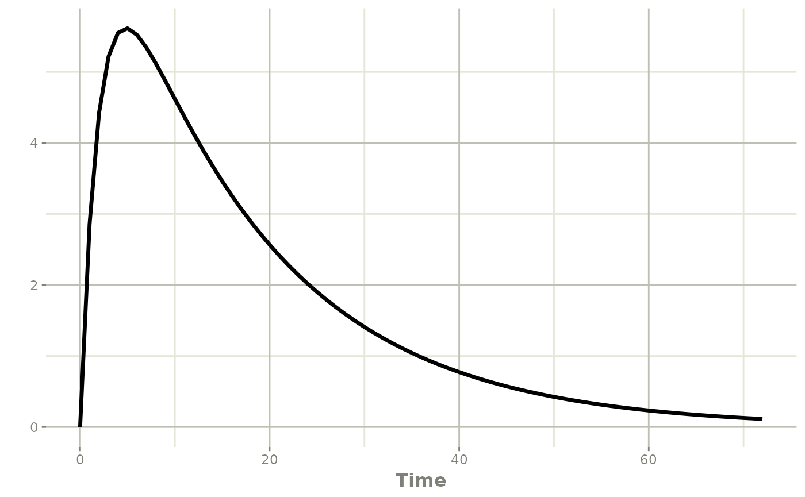
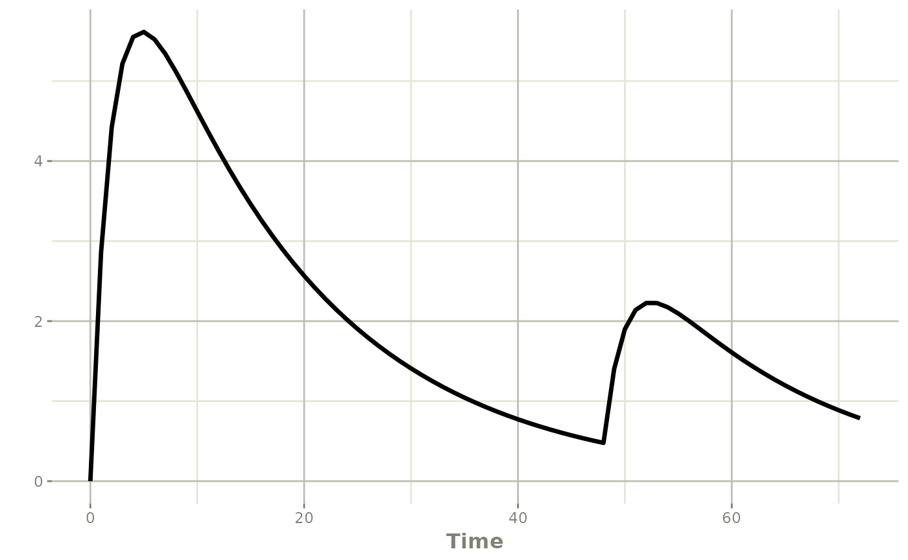
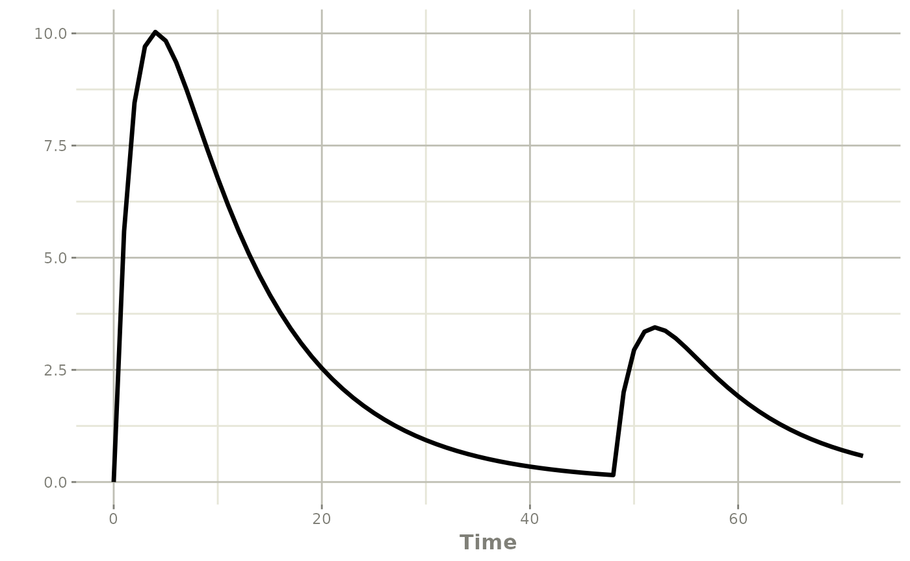
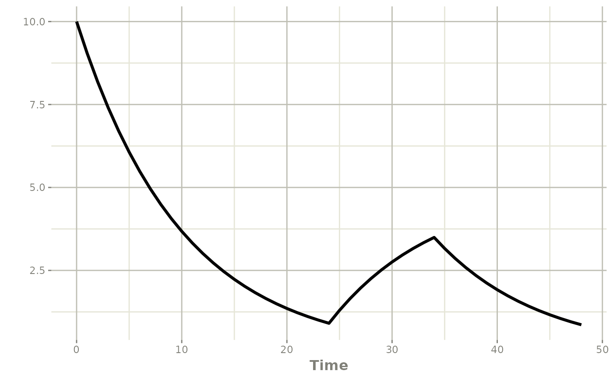
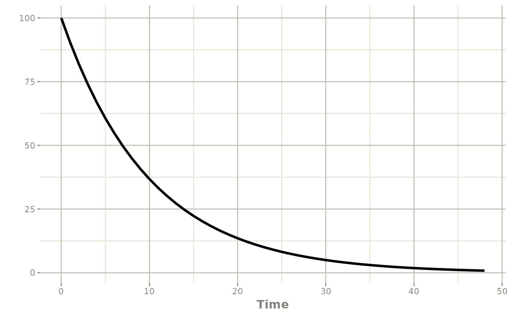
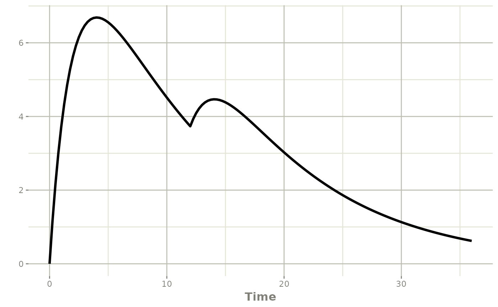
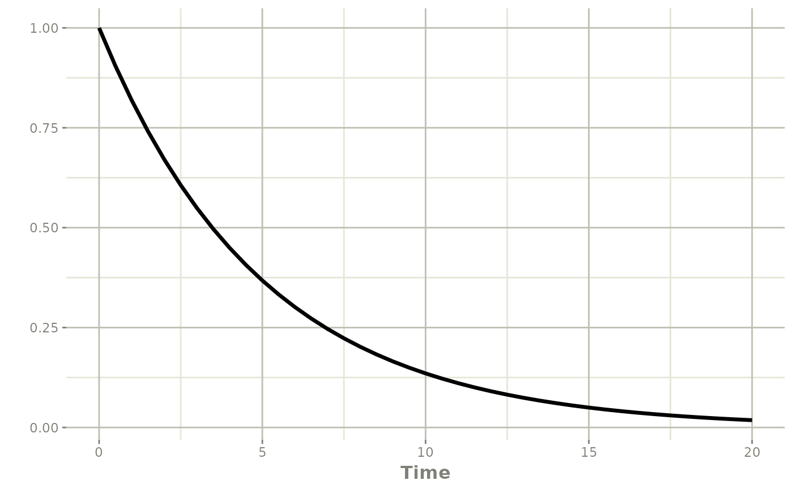

Overview
rxode2 can modify an individual’s event history while
the model is being solved. This allows adaptive dosing strategies such
as:
- response-guided titration
- rescue doses
- infusion starts with fixed rate or fixed duration
- compartment reset, replacement, or proportional adjustment
- phantom/transit doses that update
podo()andtad()without adding mass to the compartment - adaptive observation scheduling
The examples in tests/testthat/test-evid-push.R cover
the core building blocks for these workflows. This article shows how
those pieces fit together for pharmacometric tasks such as titration,
exposure matching, treatment interruption, and transit absorption.
General pattern
Adaptive dosing in rxode2 follows a simple pattern:
- Put the decision logic inside the
model({})block. - Make sure the solver visits the decision times.
- Push a new event when the condition is met.
The push functions are evaluated at scheduled output times. In
practice, this means you should include the assessment times in the
event table, often with et(seq(...)), and use
mtime() when you want the model to react at a specific
planned time.
| helper | evid | use |
|---|---|---|
| evid_() | 0, 1, 3, 4, 5, 6, 7, >=100 | General low-level interface for any supported pushed event |
| bolus() | 1 | Push bolus doses, optionally with ii/addl/ss |
| infuse() | 1 | Push fixed-rate infusions |
| infuseDur() | 1 | Push fixed-duration infusions |
| reset() | 3 | Reset all compartments |
| replace() | 5 | Set a compartment to a new amount |
| multiply() | 6 | Scale a compartment by a factor |
| phantom() | 7 | Start transit or phantom dosing without adding mass directly |
| obs() | 0 | Push one or more observation rows after the current solve time |
For portability, the examples below pass the full helper argument
list explicitly when the helper supports ii,
addl, or ss.
A simple titration example with bolus()
The most common adaptive dosing use case is titration: assess response, then add another dose if the current exposure is too low.
titrateModel <- rxode2({
d/dt(depot) <- -ka * depot
d/dt(central) <- ka * depot - cl / v * central
cp <- central / v
# Check every 24 hours, add a bolus dose if needed
if (t %% 24 == 0 && cp < 1) {
bolus(50, depot, 0, 0, 0)
}
})
titrateEvents <- et(amt = 100, time = 0) |>
et(seq(0, 72, by = 1))
titratePars <- c(ka = 0.5, cl = 1.2, v = 20)
titrateSolve <- rxSolve(titrateModel, titratePars, titrateEvents)
plot(titrateSolve, cp)
Note that this patient is dosed at time zero, but not at 24 hours since the concentration was not below 1. However by 48 hours the concentration fell below 1 so a dose of 50 is added.
As a word of caution, to administer a dose at time 48 that needs to be seen by the solver. For example:
library(dplyr)
titrateEvents <- titrateEvents |>
filter(time != 48)
titratePars <- c(ka = 0.5, cl = 1.2, v = 20)
titrateSolve <- rxSolve(titrateModel, titratePars, titrateEvents)
plot(titrateSolve, cp)
One way to overcome this is to use mtime()
titrateModel <- rxode2({
mtime(time48) <- 48 # always visit 48 hours
d/dt(depot) <- -ka * depot
d/dt(central) <- ka * depot - cl / v * central
cp <- central / v
# Check every 24 hours, add a bolus dose if needed
if (t %% 24 == 0 && cp < 1) {
bolus(50, depot, 0, 0, 0)
}
})
titratePars <- c(ka = 0.5, cl = 1.2, v = 20)
titrateSolve <- rxSolve(titrateModel, titratePars, titrateEvents)
plot(titrateSolve, cp)
Of course the other is to include the sampling times in the solver
(as shown above). You can also expose the events using the
obs() adaptive sampling helper:
titrateModel <- rxode2({
if (time == 0) {
obs(48) # only schedule at time 0 so that it doesn't schedule
# multiple observations at 48 hours
}
d/dt(depot) <- -ka * depot
d/dt(central) <- ka * depot - cl / v * central
cp <- central / v
# Check every 24 hours, add a bolus dose if needed
if (t %% 24 == 0 && cp < 1) {
bolus(50, depot, 0, 0, 0)
}
})
titrateSolve <- rxSolve(titrateModel, titratePars, titrateEvents)
plot(titrateSolve, cp)
As a note, there are many required arguments for the
bolus() dose when using the rxode2({}) solving
form of the model. However, these are not required when you use the
functional model:
titrateModel <- function() {
ini({
ka <- 0.5
cl <- 1
v <- 10
})
model({
if (time == 0) {
obs(48) # only schedule at time 0 so that it doesn't schedule
# multiple observations at 48 hours
}
d/dt(depot) <- -ka * depot
d/dt(central) <- ka * depot - cl / v * central
cp <- central / v
# Check every 24 hours, add a bolus dose if needed
if (t %% 24 == 0 && cp < 1) {
bolus(50) # or bolus(50, depot); default is cmt 1
}
})
}
titrateSolve <- rxSolve(titrateModel, titrateEvents)
plot(titrateSolve, cp)
Overall, this pattern is useful for:
- therapeutic drug monitoring
- concentration-guided rescue dosing
- model-informed dose escalation rules
If you need a repeating pushed regimen instead of a single titration
step, bolus() also supports ii,
addl, and ss.
Starting adaptive infusions
Two helper functions support adaptive infusion starts:
-
infuse(amt, rate, cmt, ii, addl, ss)for fixed-rate infusions -
infuseDur(amt, dur, cmt, ii, addl, ss)for fixed-duration infusions
The next example starts a rescue infusion when concentration falls below target at a planned decision time.
infusionModel <- function(){
ini({
cl <- 1
v <- 10
})
model({
mtime(rescueAt) <- 24
d/dt(central) <- -cl / v * central
cp <- central / v
if (t == rescueAt && cp < 1) {
infuse(amt=50, rate=5, cmt=central)
}
})
}
infusionEvents <- et(amt = 100, time = 0, cmt = 1) |>
et(seq(0, 48, by = 1))
# Here an infusion rescue is performed
infusionSolve <- rxSolve(infusionModel, infusionEvents)
plot(infusionSolve, cp)
# Here the bolus was high enough that there was no infusion rescue
infusionEvents <- et(amt = 1000, time = 0, cmt = 1) |>
et(seq(0, 48, by = 1))
infusionSolve <- rxSolve(infusionModel, infusionEvents)
plot(infusionSolve, cp)
Use infuse() when the infusion pump rate is fixed and
duration should follow from amt / rate. Use
infuseDur() when the administration window is fixed and the
effective rate should be computed from the realized drug amount and
duration.
The real impact of the infuse() is that when
f changes the amount available (realized drug amount), the
infusion duration increases. When using infuseDur() the
infusion rate changes, but not the duration.
Reset, replace, and multiply
Not every adaptive intervention is a new dose. Sometimes the state itself needs to be reset or adjusted.
reset()
reset() clears the system state. This is useful for:
- washout periods
- treatment restarts
- restarting a simulation after protocol-defined interruption
replace(amt, cmt)
replace() sets a compartment to a new amount. This is
useful for:
- forcing a compartment to a therapeutic target
- modeling device fills or reservoir changes
- imposing a measured value as a new state
multiply(amt, cmt)
multiply() scales a compartment amount by a factor. This
is useful for:
- proportional dose reduction or escalation
- dialysis-like fractional removal
- immediate bioavailability or depot scaling rules
adjustModel <- rxode2({
mtime(replaceAt) <- 12
mtime(multAt) <- 24
d/dt(depot) <- -ka * depot
d/dt(central) <- ka * depot - cl / v * central
cp <- central / v
if (t == replaceAt && depot > 0) {
replace(25, depot)
}
if (t == multAt && depot > 0) {
multiply(0.5, depot)
}
})
adjustEvents <- et(amt = 100, time = 0) |>
et(seq(0, 36, by = 0.25))
adjustPars <- c(ka = 0.5, cl = 1, v = 10)
adjustSolve <- rxSolve(adjustModel, adjustPars, adjustEvents)
plot(adjustSolve, cp)
Transit and phantom dosing with phantom()
phantom() is the adaptive analogue of
evid = 7. It updates transit-related bookkeeping such as
podo() and tad() without adding the dose
directly to the state variable as a bolus.
This is especially useful for transit absorption models, delayed onset models, or situations where dose timing should update the model clock without depositing mass immediately.
phantomModel <- function() {
ini({
k <- 0.2
})
model({
mtime(startTransit) <- 12
d/dt(depot) <- 0
d/dt(x) <- -k * x
x(0) <- 1
pd <- podo(depot)
td <- tad(depot)
if (t == startTransit) {
phantom(20, depot)
}
})
}
phantomEvents <- et(seq(0, 20, by = 0.5))
phantomSolve <- rxSolve(phantomModel, phantomEvents)
print(subset(as.data.frame(phantomSolve), time %in% 11:16,
select = c(time, depot, x, pd, td)))
#> time depot x pd td
#> 23 11 0 0.11080323 NA NA
#> 25 12 0 0.09071801 NA NA
#> 26 12 0 0.09071801 NA NA
#> 28 13 0 0.07427378 20 1
#> 30 14 0 0.06081025 20 2
#> 32 15 0 0.04978719 20 3
#> 34 16 0 0.04076229 20 4
plot(phantomSolve, x)
Notice that pd and td update after the
phantom event while the depot state is not handled like an ordinary
bolus dose.
Adaptive observation scheduling with obs()
When the goal is simply to add future observation rows,
obs() is a more concise interface than
evid_(..., evid = 0, ...). Each argument is interpreted as
a time offset from the current solve time.
obsModel <- rxode2({
mtime(extraSample) <- 8
d/dt(x) <- -k * x
if (t >= extraSample && t < extraSample + 0.5) {
obs(0.5, 1, 2)
}
})
obsEvents <- et(amt = 1, time = 0) |>
et(c(0, 8, 12))
obsSolve <- rxSolve(obsModel, c(k = 0.2), obsEvents, inits = c(x = 1))
#> intdy -- t = 9 illegal. t not in interval tcur - _rxC(hu) to tcur
#> intdy -- t = 10 illegal. t not in interval tcur - _rxC(hu) to tcur
obsSolve[, c("time", "x")]
#> time x
#> 1 0.0 2.0000000
#> 2 8.0 0.4037945
#> 3 8.0 0.4037945
#> 4 8.5 0.1814365
#> 5 9.0 0.1545995
#> 6 10.0 0.1545995
#> 7 12.0 0.1814365Use obs() when you want:
- adaptive follow-up sampling after a decision point
- multiple future observation rows from one trigger
- a simpler alternative to
evid_()for observation-only pushes
Direct control with evid_()
When one of the convenience helpers does not match the exact event
you need, use evid_() directly. This gives full access to
the NONMEM-style event fields:
directModel <- rxode2({
mtime(extraSample) <- 8
d/dt(x) <- -k * x
if (t >= extraSample && t < extraSample + 0.5) {
evid_(t + 0.5, 0, 0, 1, 0, 0, 0, 0)
}
})
directEvents <- et(amt = 1, time = 0) |>
et(c(0, 8, 12))
directSolve <- rxSolve(directModel, c(k = 0.2), directEvents, inits = c(x = 1))
directSolve[, c("time", "x")]
#> time x
#> 1 0.0 2.0000000
#> 2 8.0 0.4037945
#> 3 8.0 0.4037945
#> 4 8.5 0.1814365
#> 5 12.0 0.1814365The low-level evid_() interface is appropriate when you
need:
- adaptive observation rows (
evid = 0) - explicit resets or reset-then-dose logic
- direct control over
rate,ii,addl, andss - classic internal rxode2 evids
Practical advice for titration workflows
1. Put decision times in the event table
Adaptive logic only runs when the solver is at a scheduled event or
output time. If a titration visit is supposed to happen at 24 hours,
make sure the event table contains 24 hours. For dosing regimens every
24 hours you can use the modulo operator to check for dosing times, that
is (time %% 24) == 0.
2. Use mtime() or obs() for planned
decision points
mtime() is a convenient way to mark protocol decision
times inside the model and makes the logic easier to read than repeating
literal times.
The mtime() framework will only be observed once, while
if you use obs() make sure to add observations at the
appropriate times.
3. Guard against repeated firing
A condition such as if (cp < target) can remain true
across many times. Anchor it to a visit window or other one-time trigger
so the same adaptive action is not pushed repeatedly by accident.
4. Monitor maxExtra
Each pushed event counts against the maxExtra limit in
rxSolve(). If you accidentally create an event cascade,
rxode2 will stop with a maxExtra error instead
of silently generating an unbounded event history.
5. Pick the helper that matches the pharmacology
- use
bolus()for added doses - use
infuse()orinfuseDur()for infusion starts - use
reset()for clearing the system - use
replace()when you know the new compartment amount. Helpful for calculating AUCs. - use
multiply()for proportional adjustment - use
phantom()for transit bookkeeping without direct deposition - use
obs()for observation-only follow-up rows
Common pharmacometric applications
These adaptive dosing tools are useful in many pharmacometric settings:
- oncology dose holds, dose reductions, and re-escalation
- anti-infective therapeutic drug monitoring
- target-controlled rescue dosing
- model-based switching from loading dose to maintenance infusion
- transit absorption and delayed onset models
- protocol simulation with response-based dosing rules
Summary
The adaptive event tools in rxode2 let the model create
new events at solve time. Together, evid_(),
bolus(), infuse(), infuseDur(),
reset(), replace(), multiply(),
phantom(), and obs() cover the main adaptive
dosing paradigms needed for titration, interruption, rescue therapy,
adaptive sampling, transit models, and protocol simulation.
The tests in tests/testthat/test-evid-push.R provide
concrete regression coverage for these event types, and the same
patterns can be used in practical pharmacometric workflows.